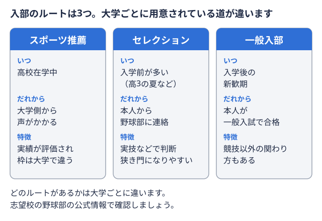

部活運営ガイド 2026-11-03
大学野球部に公式サイトは必要？情報発信の実態とコストをかけない方法
大学野球部の主務マネージャーの代表にあたる部員。連盟や大学との連絡窓口になり、リーグ戦の運営や合宿の準備なども受け持つ。 用語辞典で見る・広報担当になると、「部の公式サイトを作ったほうがいいのでは」という話が出ることがあります。新入部員やOB・OG、保護者、企業協賛の担当者など、部の情報を知りたい相手は多岐にわたるためです。しかし実際には、独自の公式サイトを持つ大学野球部はそれほど多くありません。この記事では、大学野球部の公式サイトの実態と、サイトを持つメリット・作成にかかる負担を整理したうえで、主務・広報担当がコストをかけずに情報発信する方法を解説します。
用語辞典で見る・広報担当になると、「部の公式サイトを作ったほうがいいのでは」という話が出ることがあります。新入部員やOB・OG、保護者、企業協賛の担当者など、部の情報を知りたい相手は多岐にわたるためです。しかし実際には、独自の公式サイトを持つ大学野球部はそれほど多くありません。この記事では、大学野球部の公式サイトの実態と、サイトを持つメリット・作成にかかる負担を整理したうえで、主務・広報担当がコストをかけずに情報発信する方法を解説します。
大学野球部に公式サイトはあるのか
早稲田大学野球部の例
早稲田大学野球部は、大学の競技スポーツセンターが運営する公式サイト内に専用ページを持っています。部の沿革や「知識は学問から、人格はスポーツから」という理念、早慶戦の日程・観戦方法・中継情報などがまとめられており、情報発信の土台として機能しています。ただしこれは野球部が独自にサイトを立てているのではなく、大学全体の運動部ポータルの一部として位置づけられている点がポイントです。
独自サイトを持たない部も多い
一方で、野球部単独の公式サイトを確認できない大学も少なくありません。試合結果や部の近況は、大学の広報ニュースや公式X（旧Twitter）などのSNS、所属連盟のサイトを通じて断片的に発信されているケースが中心です。つまり「公式サイトがない＝情報発信していない」わけではなく、発信の手段が分散している部が多いというのが実態です。
公式サイト・情報発信があると役立つ場面
部の情報がまとまって発信されていると、次のような相手に対してプラスに働きます。
| 相手 | メリット |
|---|---|
| 高校球児・保護者 | 練習参加入部や進学を考える人が、大学野球部の練習に実際に加わって体験すること。入部の前に必ず参加するよう求める大学もある。  用語辞典で見る・セレクション入部を希望する人の練習参加や実技を見て、入部や推薦の可否を判断する選考。実施するか、どう行うかは大学ごとに違う。用語辞典で見るの案内、部の方針を事前に確認できる |
| OB・OG | 現役部員の活動状況を把握し、支援や協賛の判断材料になる |
| 企業・協賛検討先 | 部の実績や発信力を確認でき、協賛提案の説得材料になる |
| メディア・ファン | 試合日程や結果を追いやすくなる |
特に企業協賛や新入部員勧誘の場面では、「部の情報がどこで確認できるか」が明確であることが、相手に安心感を与える材料になります。
独自サイトを作る場合の負担
独自の公式サイトを一から作成する場合、次のような負担が発生します。
- 制作・維持費用: 外部に制作を依頼すれば費用がかかり、自作の場合もドメイン・サーバー代が継続的に発生します
- 大学への申請手続き: 大学によっては、学生団体がホームページを開設する際に所定の申請書を提出し、学内の情報ネットワーク利用規則に沿った審査を受ける必要があります
- 更新の担い手: 主務・広報担当が交代しても更新が続く体制（担当者の引き継ぎ、更新マニュアル）を整えておく必要があります
限られた部費・人員の中では、独自サイトの新規制作よりも、既にある手段を組み合わせて情報発信を整える方が現実的な場合が多いといえます。
コストをかけずに情報発信する方法
SNSを情報発信の軸にする
公式X・Instagramなどは無料で始められ、試合結果や練習の様子をリアルタイムに発信できます。更新の負担が軽い分、主務・広報担当が交代しても引き継ぎやすいという利点もあります。
大学の体育会公式サイトを活用する
多くの大学には運動部全体を紹介する競技スポーツセンターや体育会のサイトがあります。独自サイトを持たない部でも、まずはこの枠内で情報が最新になっているかを確認し、学生課や広報担当窓口に更新を依頼するところから始められます。
無料掲載サービスを活用する
部の情報を整理して無料で掲載できるサービスとして、ツナカレのようなプラットフォームもあります。部の基本情報や活動内容を登録しておくことで、企業側からの協賛の問い合わせにつながる可能性があり、独自サイトを持たない部にとって情報発信の選択肢の一つになります。企業協賛を探す具体的な進め方は、大学野球部が企業協賛・スポンサーを集めるには？でも詳しく解説しています。
まとめ
大学野球部の多くは、独自の公式サイトではなく大学サイトやSNSを組み合わせて情報発信をしているのが実態です。独自サイトの新規制作には費用や申請手続き、更新体制づくりの負担が伴うため、まずはSNS・大学の体育会サイト・無料掲載サービスといった既存の手段を整理して使うところから始めるのが現実的です。資金調達の選択肢全体を見直したい場合は、大学野球部の部費・遠征費、どう集める？も参考にしてみてください。自部の所属リーグでの立ち位置を確認したいときは、東京六大学野球 2026年春季 順位表や東都大学野球1部 2026年秋季 日程もあわせてご覧ください。
出典
遠征費・運営資金に。協賛募集を無料掲載
部活の運営者の方へ。
オフシーズン・引退後に、長期インターンという選択
部活で培った力を実務で試す。16タイプ診断（30秒）で合う企業がわかります。